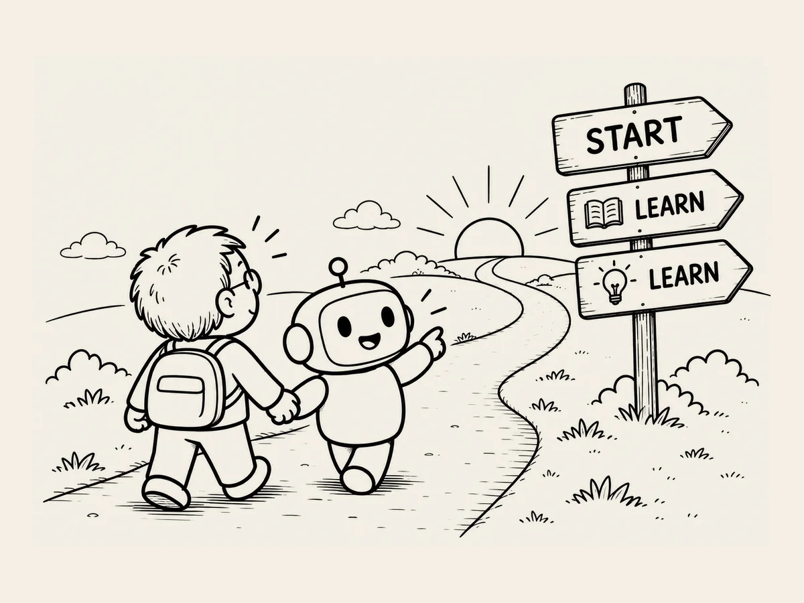

9.
Sometimes, You Need to Know Just Enough.
I used to believe that knowledge was power.
AI changed my thinking a little.
Sometimes, knowing just enough is power.
If I didn't know something, I asked.
If I didn't understand, I asked for a simpler explanation.
But there was a trap.
If I tried to understand everything in too much detail, there was no end to it.
AI could explain things endlessly, like an encyclopedia.
And it would keep going without a single complaint.
When you're building a website, there's no end to what you don't know.
I'd get curious about servers and ask.
The explanation would bring up something called DNS.
Ask about DNS, and up came IP addresses.
Ask about something else, and another unfamiliar term would appear.
One unknown thing kept leading to another.
Before I knew it, I'd end up somewhere strange.
Hang on.
Who am I, and what was I trying to do again?
That's when I made a rule for myself.
Understand only enough to make the decision in front of me.
A server?
Something I need so people can see my website on the internet.
That's enough for now.
DNS?
Something that connects my domain to where my website lives.
That's enough for now.
If I ever really needed to understand more, I could ask again then.
AI would always be there to ask.
Before, I thought I had to study first before starting something new.
Study.
Understand.
Prepare.
Then start.
But working with AI changed the order.
See the big picture.
Start.
When I don't know something, ask.
Understand only as much as I need.
Then do it again.
Knowing just enough doesn't mean doing sloppy work.
It means not losing sight of the big picture.
